Les clients
Ils comparent les offres et commandent en ligne, sur tango.lu ou depuis l’app MyTango. Le persona John Chevalier les représente.
Besoin clé : comparer les offres et commander seul, en étant reconnu comme client.
Sur tango.lu, les clients ne comprenaient pas les offres au moment de choisir. J’ai audité le parcours d’achat global, puis retravaillé le modèle de page commun aux forfaits mobiles et à la fibre.
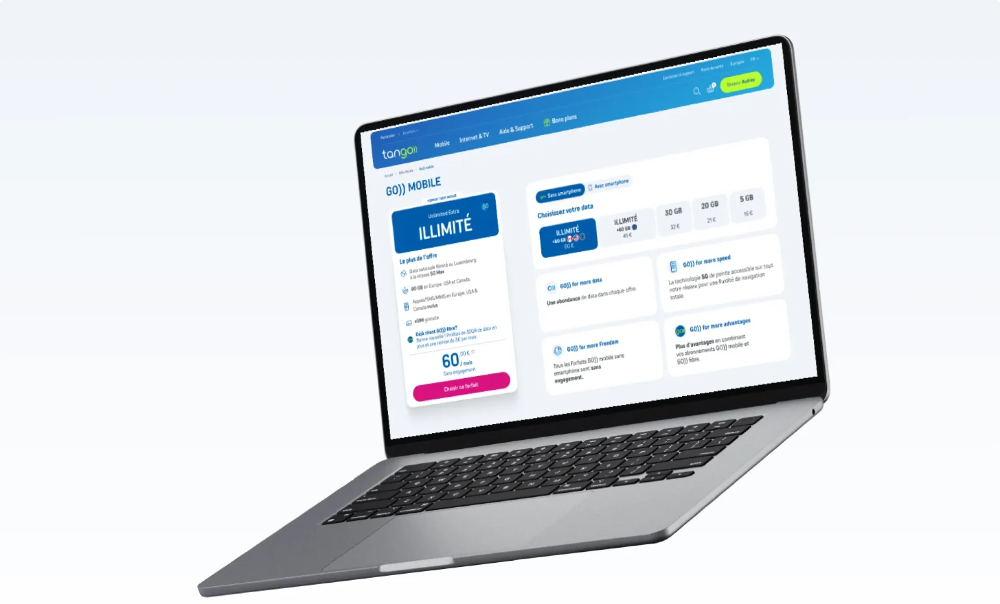
Projet réalisé en poste chez Tango, sous clause de confidentialité. Les captures sont anonymisées et aucune donnée chiffrée interne n’est communiquée.
Sur tango.lu, la page offre est l’endroit où le client décide. C’est aussi là que se concentraient les remontées clients : prix affichés offre par offre, avantages cachés dans une modale, et un lien de comparaison qui faisait quitter la page.
Cette page ouvre aussi un parcours plus large : souscrire à la fibre, l’ajouter à un forfait mobile, déménager ou revenir chez Tango. L’enjeu : que chacun compare et choisisse sans quitter la page, et qu’un client déjà connu soit reconnu.
Quatre objectifs ont cadré le projet :
L’enquête Contentsquare a servi de point de départ au diagnostic : elle montre, du point de vue des visiteurs eux-mêmes, pourquoi un achat s’interrompt, et a orienté l’audit vers les moments où le client compare et choisit son offre.
Avez-vous abandonné des achats en ligne au cours du processus de paiement au cours des 3 derniers mois ? Si oui, pour quelles raisons ?
J’ai conçu cette refonte de bout en bout, de la recherche à la passation, au sein d’une squad produit interne.
Contrainte de départ : les avantages associés aux offres étaient fixés par les équipes Customer experience et Produit. Le design a donc porté sur leur présentation.
La page offre sert deux groupes d’utilisateurs principaux :
Ils comparent les offres et commandent en ligne, sur tango.lu ou depuis l’app MyTango. Le persona John Chevalier les représente.
Besoin clé : comparer les offres et commander seul, en étant reconnu comme client.
Ils expliquent les offres aux clients en magasin, page offre à l’appui. Une offre difficile à lire devient une offre difficile à expliquer. Les bureaux de Tango partageaient le même bâtiment qu’une boutique, ce qui rendait la recherche UX auprès des conseillers particulièrement accessible.
Besoin clé : envoyer le récapitulatif de la commande par e-mail au client, pour qu’il la reprenne chez lui sans se connecter à son compte en boutique.
J’ai affiné le persona existant de l’équipe, John Chevalier, à partir des remontées clients et des ateliers. Il porte le parcours principal : les conseillers s’appuient sur la même page, donc une page lisible pour John l’est aussi pour eux. Quatre cas d’usage décrivent ensuite les situations dans lesquelles un client arrive sur la page.
Titulaire du compte · client mobile Tango
Persona illustratif : photo de banque d’images, prénom fictif.
John correspond au cas d’usage 2. Les trois autres partagent ses objectifs, avec un point d’entrée différent.
Objectif : savoir si son adresse est éligible et choisir son débit.
Ce qui bloque : les débits et leurs prix se comparent difficilement.
Objectif : ajouter la fibre à son forfait et profiter de son avantage déjà client mobile.
Ce qui bloque : il refait le parcours comme un nouveau visiteur.
Objectif : transférer sa ligne à sa nouvelle adresse, sans résilier.
Ce qui bloque : le parcours est conçu pour une nouvelle souscription.
Objectif : réactiver ses services rapidement.
Ce qui bloque : il repart de zéro et ressaisit toutes ses informations.
Chaque cas d’usage devient une user story, de la première visite à la validation. Ces stories servent de fil rouge aux esquisses présentées plus bas.
Côté conseillers, j’ai capturé et analysé le temps et les efforts nécessaires pour expliquer une offre sur l’ancienne page : durée de l’explication, écrans parcourus, allers-retours entre les forfaits, questions posées par le client. Cette mesure de départ sert de référence pour juger la solution.
J’ai audité le parcours d’achat de la fibre, de la page offre au panier, en croisant les données Contentsquare et les remontées clients. En le rapprochant du parcours forfait mobile, j’ai identifié la source commune des frictions : les deux produits reposent sur le même modèle de page offre. Chaque friction relevée sur la fibre se retrouvait à l’identique sur le mobile. Le problème se situait donc dans ce modèle partagé, et une seule refonte pouvait corriger les deux parcours.
| Friction relevée | Offre Fibre | Forfait mobile |
|---|---|---|
| Pas de vue d’ensemble : le prix s’affiche offre par offre | ||
| Détails et avantages en modale, une offre à la fois | ||
| Lien de comparaison qui fait quitter la page | ||
| Choix structurant peu visible : test d’éligibilité, offre avec ou sans smartphone | ||
| Arguments clés (USP) qui semblent cliquables mais ne le sont pas | ||
| Client existant non reconnu : il refait le parcours |
Côté boutique : en observant les conseillers expliquer une offre, j’ai retrouvé les mêmes frictions, amplifiées par la vente en face à face. Ils passent par la page comparateur, ouvrent la modale de chaque offre une à une, font plusieurs allers-retours entre les offres et les modales, et doivent swiper pour afficher les autres offres. Le modèle de page freinait donc aussi la vente en boutique.
Le parcours forfait mobile, détaillé ci-dessous, montre ce modèle commun et ses frictions en situation.
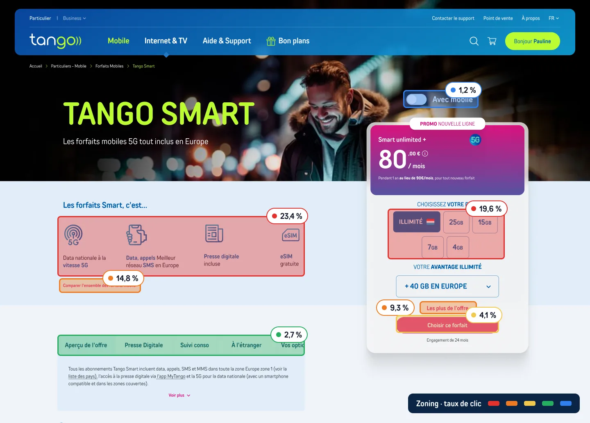
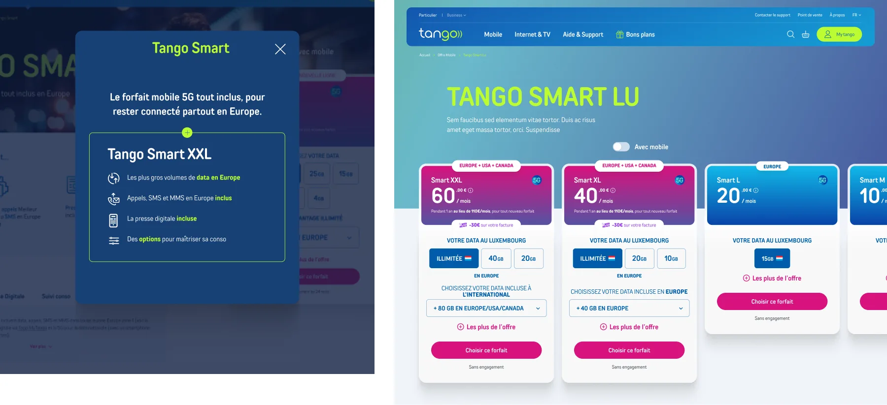
Avant de dessiner, j’ai cartographié le parcours global de la fibre, de la découverte de l’offre à l’activation, en indiquant où chaque cas d’usage y entre. Les frictions de l’audit se concentraient sur les étapes de décision : comparer, tester l’éligibilité, configurer.
| Étape | C1 | C2 | C3 | C4 | Friction relevée |
|---|---|---|---|---|---|
| 1Découvrir l’offre Tango Fibre | USP non cliquables | ||||
| 2Comparer débits et prix | Pas de vue d’ensemble, comparaison hors page | ||||
| 3Se connecter : « Déjà client ? » | Client existant non reconnu | ||||
| 4Tester l’éligibilité de l’adresse | Test d’éligibilité peu visible | ||||
| 5Configurer l’offre et ses avantages | Avantages en modale | ||||
| 6Panier et informations | Informations à ressaisir | ||||
| 7Installation et activation | Hors du périmètre de la refonte |
C1 Nouveau client fibre · C2 Client mobile Tango · C3 Client qui déménage · C4 Ancien client
Ce que la carte a montré : trois cas d’usage sur quatre concernent des clients déjà connus de Tango. La page les traitait tous comme de nouveaux visiteurs. D’où la décision de reconnaître le client existant dès la page offre.
J’ai ensuite détaillé ce qui se passe derrière chaque écran du parcours : interface, appels API, systèmes back-end et règles métier. Ce niveau de détail aligne design et développement sur le même parcours.
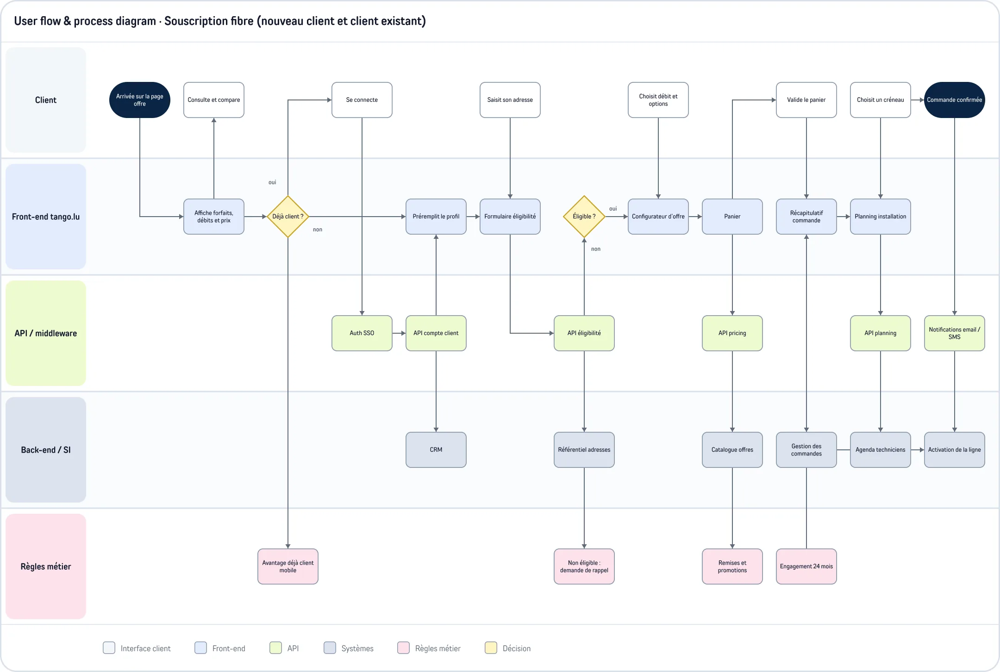
Avant les maquettes, j’ai esquissé le chemin idéal de chaque user story en écrans basse fidélité. Chaque planche fixe l’essentiel du parcours.
En tant que nouveau client, je veux vérifier l’éligibilité de mon adresse et comparer les débits, afin de commander la fibre sans appeler le service client.
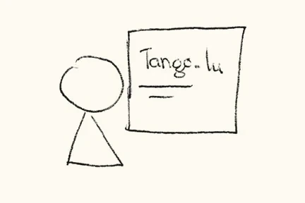
1. Arrive sur la page Tango Fibre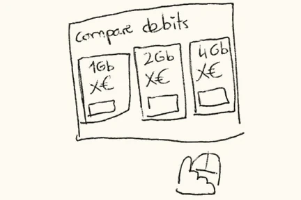
2. Compare débits et prix d’un coup d’œil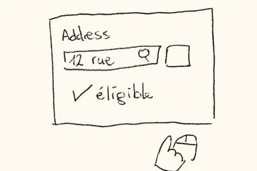
3. Teste l’éligibilité de son adresse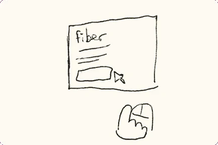
4. Choisit son débit, voit ce qui est inclus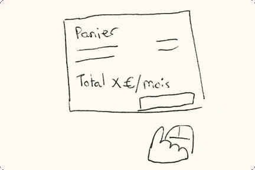
5. Ajoute au panier et crée son compte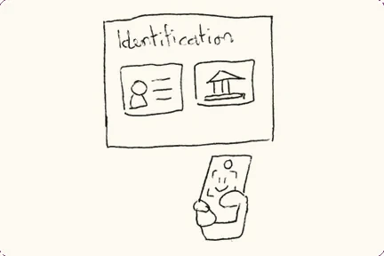
6. Crée son compte en scannant son ID ou importe un RIB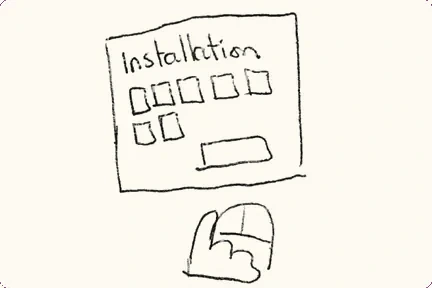
7. Choisit un créneau d’installationEn tant que client mobile Tango, je veux ajouter la fibre en étant reconnu, afin de profiter de mon avantage déjà client mobile sans ressaisir mes informations.
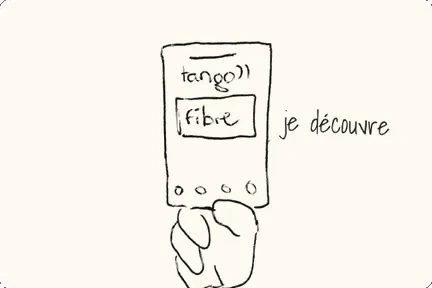
1. Découvre la fibre depuis l’app MyTango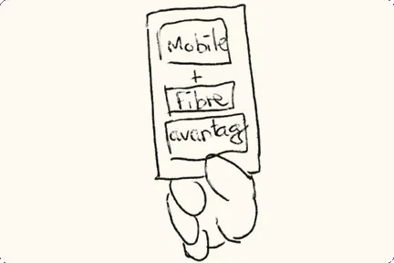
2. Voit son avantage déjà client mobile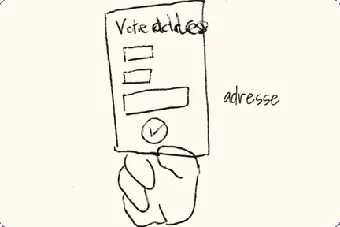
3. Éligibilité testée sur son adresse connue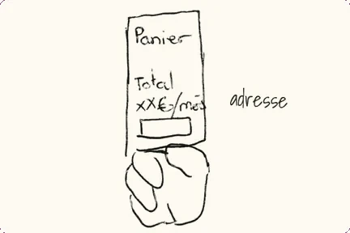
4. Choisit son débit, l’avantage s’applique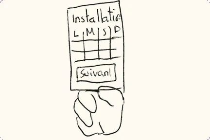
5. Choisit un créneau d’installationEn tant que client fibre, je veux transférer ma ligne à ma nouvelle adresse, afin de garder mon service sans refaire de souscription.
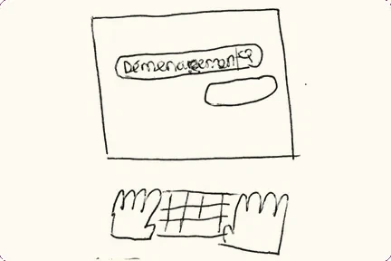
1. Cherche « déménagement »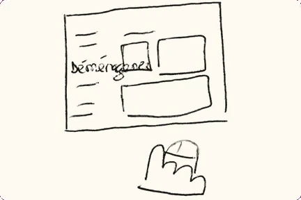
2. Lit le tutoriel et ouvre son app comme indiqué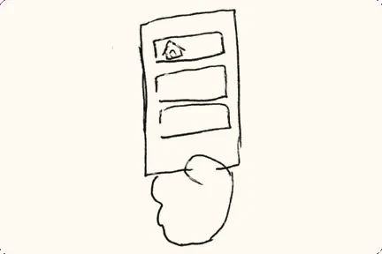
3. Cherche l’emplacement « Déménager » dans l’app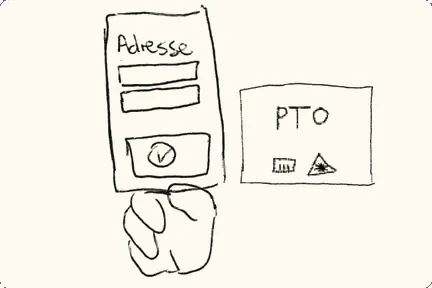
4. Saisit sa nouvelle adresse et la référence PTOEn tant qu’ancien client, je veux retrouver mon compte et mes informations, afin de réactiver mes services en quelques minutes.
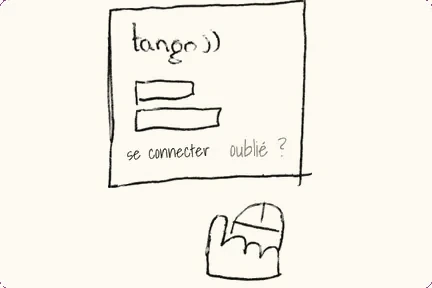
2. Retrouve son ancien compte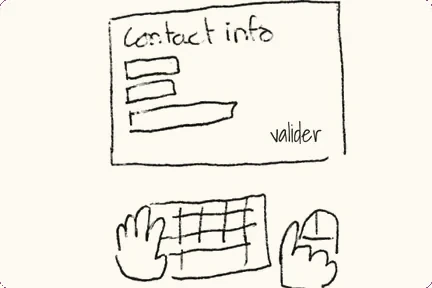
5. Retrouve ses informations prérempliesEsquisses basse fidélité : le chemin idéal de chaque user story, avant les maquettes.
Les avantages étaient fixés. Le design les rend comparables.
Le bouton « Comparer l’ensemble des forfaits » et sa page dédiée, qui faisaient sortir le client du parcours.
Toutes les offres affichées côte à côte, avec leur détail visible. La comparaison se fait directement sur la page, sans bouton ni tableau supplémentaire.
La version finale répond point par point aux frictions relevées pendant l’audit, à travers quatre décisions, pensées pour le client en ligne comme pour le conseiller en boutique.
| Décision | Ce qui change |
|---|---|
| Comparer directement | Les offres sont visibles côte à côte. En boutique, le conseiller compare avec le client sur un seul écran, sans page comparateur ni swipe. |
| Rendre les avantages lisibles | Les détails ne sont plus cachés dans une modale. Le conseiller n’enchaîne plus les allers-retours entre les offres et les modales. |
| Reconnaître le client | Le parcours tient compte de sa relation existante avec Tango. |
| Envoyer le panier par e-mail | Depuis le panier, le récapitulatif de la commande part par e-mail. En boutique, le client repart avec sa commande prête et la finalise chez lui, sans se connecter à son compte sur place. |
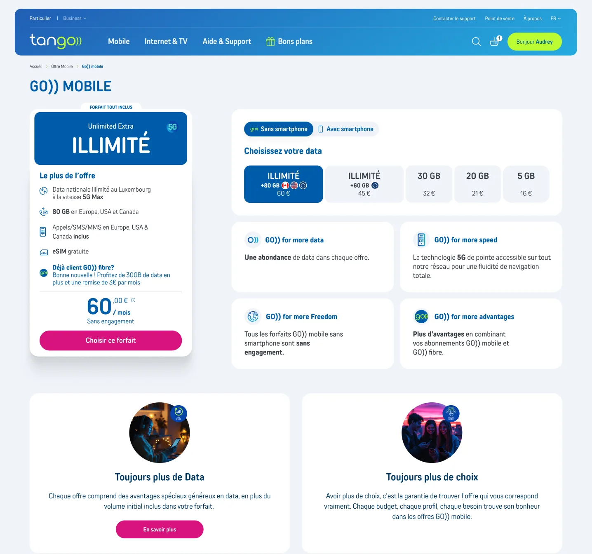
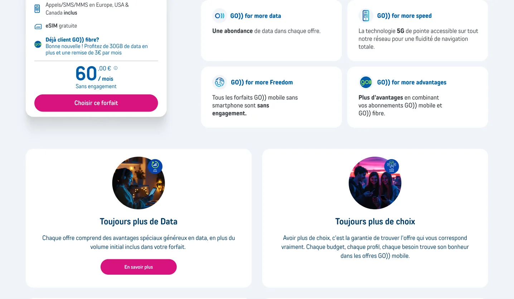
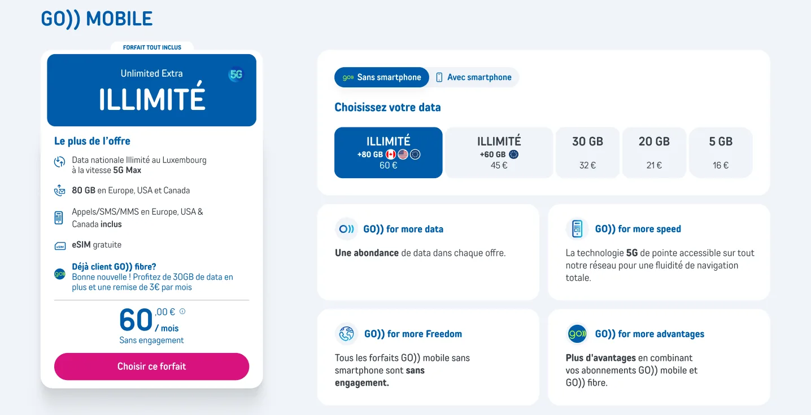
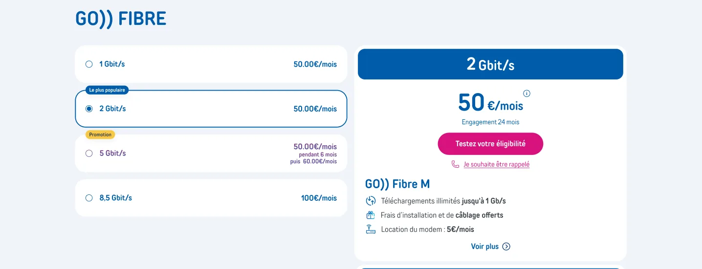
John est déjà client mobile et veut ajouter la fibre. Il se connecte, retrouve son adresse déjà connue et choisit « Nouvelle ligne ». Les étapes suivantes, modem, installation et confirmation, gardent le panier visible, avec le prix mensuel, le prix à la commande et la première facture.
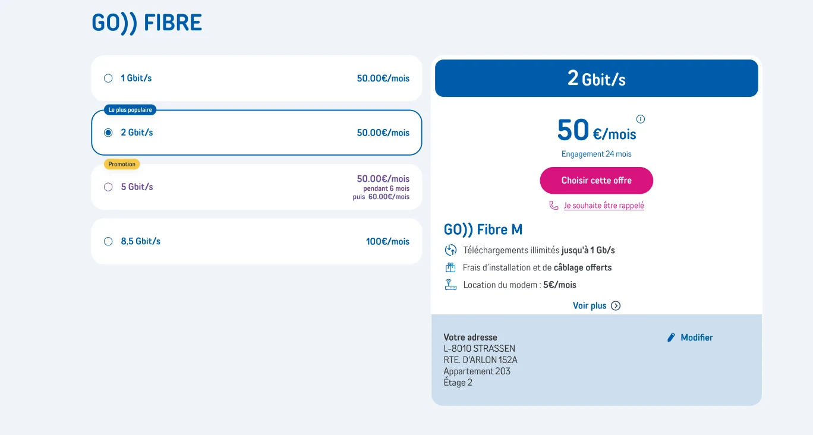
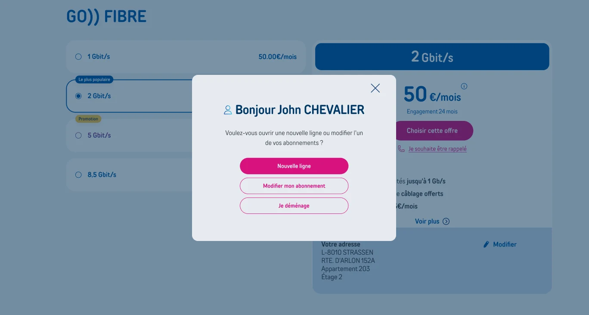
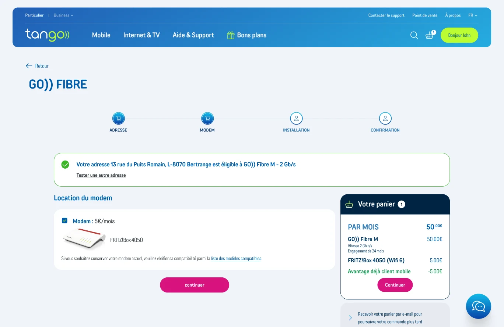
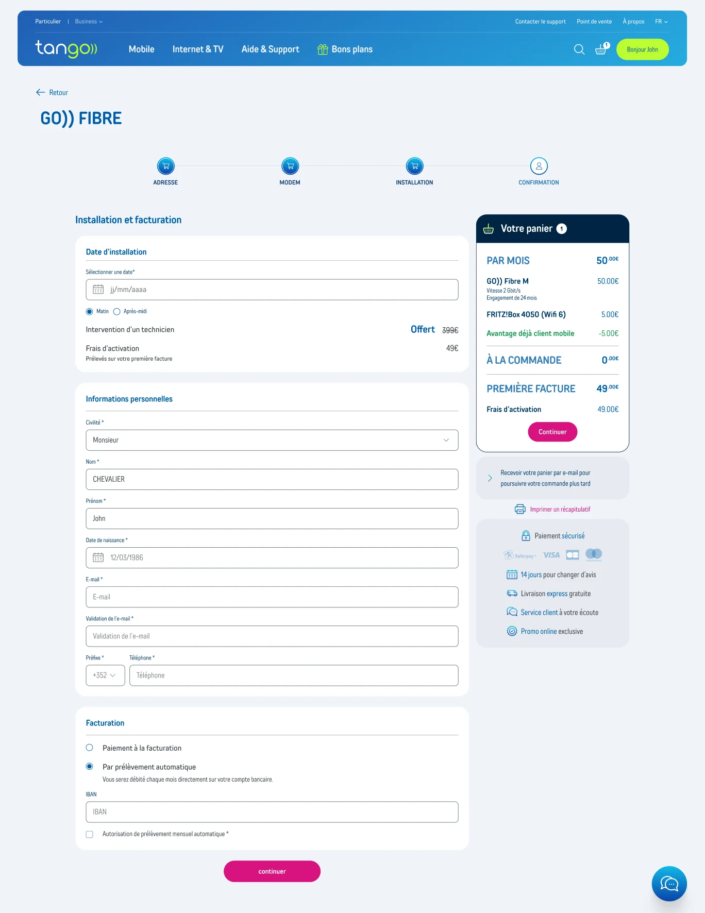
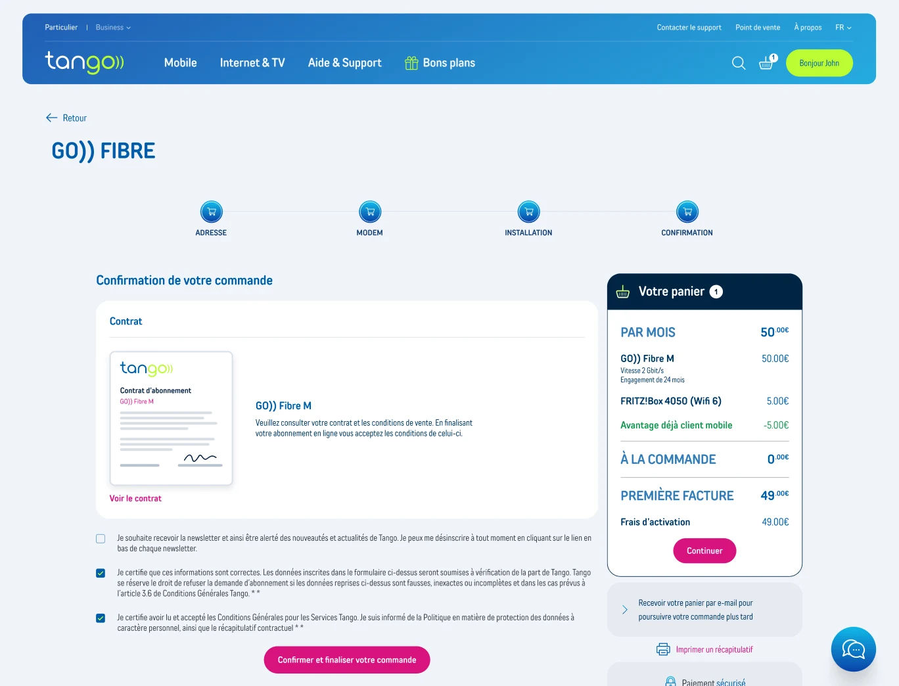
La proposition a été validée par les équipes, puis mise en ligne sur tango.lu.
Les indicateurs pertinents pour mesurer les effets de cette refonte étaient :
Les avantages imposés sont devenus un argument de vente une fois rendus comparables.
Des clics sur des éléments non cliquables signalent un besoin d’information.
Chaque sortie de page est une occasion de perdre l’achat.
Les offres se comparent quand elles sont côte à côte.
Un vrai sélecteur et de vrais liens servent tout le monde.